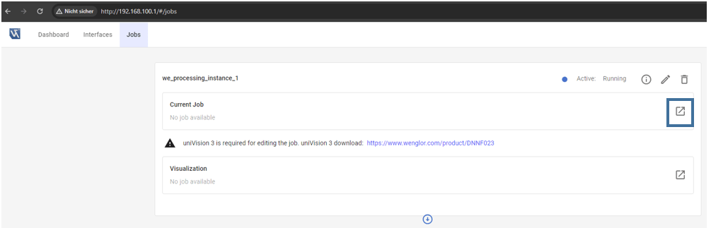
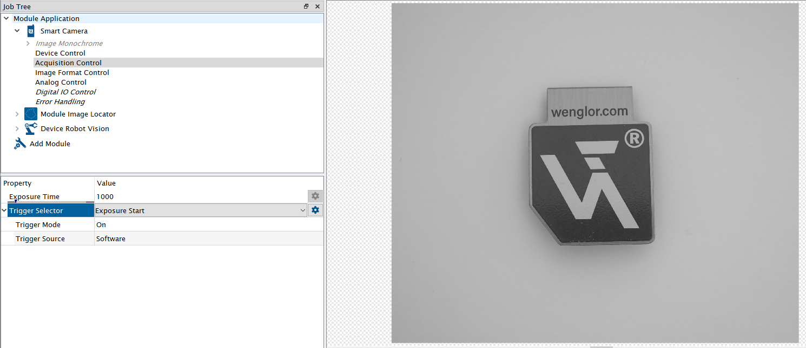
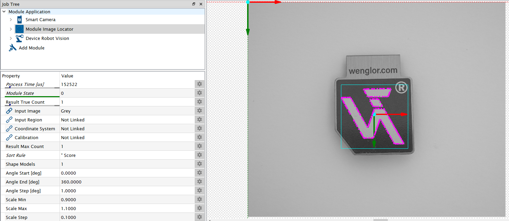

4.4 Detection Job in uniVision¶
Open the device website of the Machine Vision Device, access the tab Jobs and open the current job in the uniVision 3 software.

Load the template Pick objects with robot for easy setup.

Adjust focus and brightness of the camera to get a sharp and well illuminated image. By default, Trigger Mode is set to On and Trigger Source to Software (mandatory for the calibration procedure). Adjust Trigger Mode to Off and switch to Run Mode in order to adjust the camera image. Afterwards change the setting back to Software trigger. If working with color images, make sure that Create BGRA Image is active at the input camera (only relevant if working with URCap).
Teach your object at Module Image Locator (or Module Image Pattern Match). For details, check the operating instructions of the software wenglor uniVision 3 (DNNF023).

In the template, Device Robot Vision is already pre-configured to send the results to the robot server.
| Process Time \(\mu\)s | Process time to run the module in \(\mu\)s |
| Module State | Shows state of module:
|
| Output | Shows preview of the output sent to the wenglor robot server. |
| Shape Model Count | Defines the number of shape models (object types) used in the submodule Shape Model Height Difference |
| Result Max Count | Defines the number of results used in the sub-module Result List. |
| Result True Count | Link the value with Result True Count of Module Image Locator or Module Image Pattern Match so that the robot knows how many objects are within the current image. By default, the value is 0. Linking Result True Count is mandatory so that the robot server knows how many objects are found in the current image. |
Sub-Module Shape Model Height Difference (number of entries depends on parameter Shape Model Count):
Height Difference to Calibration [mm] #...x: Defines the height difference of each shape model to the calibration plate. By default, the value is 0.
NOTE:
- It is possible to pick different object types with different heights.
- Enter the object height relative to the surface of the calibration plate in mm. If the object is lower than the calibration plate plane, enter a negative number. If the object is higher, enter a positive number. Use the height difference also in case of height variations after the calibration process.
Sub-Module Result List (number of entries depend on parameter Result Max Count)
Link the result list of Module Image Locator or Module Image Pattern Match to the Result List of Device Robot Vision.
| Shape Model | Link the Shape Model (object type) for each result. By default, the value is 0. |
| X [px] | Link the x position for each result. Linking the x coordinate is madatory. |
| Y [px] | Link the y position for each result. Linking the y coordinate is mandatory. |
| Phi (Z-Rotation) | [deg] Link the Phi value (z rotation) for each result. Linking Phi is mandatory. |
| Additional Value | Optionally link an additional string result (e.g. score value) for each result. |
NOTE:
- It is possible to detect and pick multiple objects in a single image capture (if setup accordingly in the uniVision job).
- Offsets in x and y can be set directly in
Module Image LocatororModule Image Pattern Match.- Pixel results for x and y can only be used by the robot if created by modules that use the original camera image or any image based on it. No support of x and y coordinates created by modules that use the undistorted or perspective transformed image of
Module Image Calibrationor any image based on it. Exceptionally, it is supported to use the undistorted image inModule Image Locatoror inModule Image Pattern Matchwith linked input calibration if linking the distorted pixel coordinates atDevice Robot Vision.
Save the detect objects job in the device projects folder of the Machine Vision Device.